OGGM flowlines: where are they?#
In this notebook we show how to access the OGGM flowlines location before, during, and after a run.
Some of the code shown here will make it to the OGGM codebase eventually.
from oggm import cfg, utils, workflow, tasks, graphics
from oggm.core import flowline
import salem
import xarray as xr
import pandas as pd
import numpy as np
import geopandas as gpd
import matplotlib.pyplot as plt
cfg.initialize(logging_level='WARNING')
2026-03-09 23:39:40: oggm.cfg: Reading default parameters from the OGGM `params.cfg` configuration file.
2026-03-09 23:39:40: oggm.cfg: Multiprocessing switched OFF according to the parameter file.
2026-03-09 23:39:40: oggm.cfg: Multiprocessing: using all available processors (N=4)
Get ready#
# Where to store the data
cfg.PATHS['working_dir'] = utils.gettempdir(dirname='OGGM-flowlines', reset=True)
# Which glaciers?
rgi_ids = ['RGI60-11.00897']
# We start from prepro level 3 with all data ready
base_url = 'https://cluster.klima.uni-bremen.de/~oggm/gdirs/oggm_v1.6/L3-L5_files/2025.6/centerlines/W5E5/per_glacier_spinup/'
gdirs = workflow.init_glacier_directories(rgi_ids, from_prepro_level=3, prepro_base_url=base_url, prepro_border=80)
gdir = gdirs[0]
gdir
2026-03-09 23:39:41: oggm.workflow: init_glacier_directories from prepro level 3 on 1 glaciers.
2026-03-09 23:39:41: oggm.workflow: Execute entity tasks [gdir_from_prepro] on 1 glaciers
<oggm.GlacierDirectory>
RGI id: RGI60-11.00897
Region: 11: Central Europe
Subregion: 11-01: Alps
Name: Hintereisferner
Glacier type: Glacier
Terminus type: Land-terminating
Status: Glacier or ice cap
Area: 8.036 km2
Lon, Lat: (10.7584, 46.8003)
Grid (nx, ny): (278, 236)
Grid (dx, dy): (50.0, -50.0)
Where is the terminus of the RGI glacier?#
There are several ways to get the terminus, depending on what you want. They are also not necessarily exact same:
Terminus as the lowest point on the glacier#
# Get the topo data and the glacier mask
with xr.open_dataset(gdir.get_filepath('gridded_data')) as ds:
topo = ds.topo
# Glacier outline raster
mask = ds.glacier_ext
topo.plot();
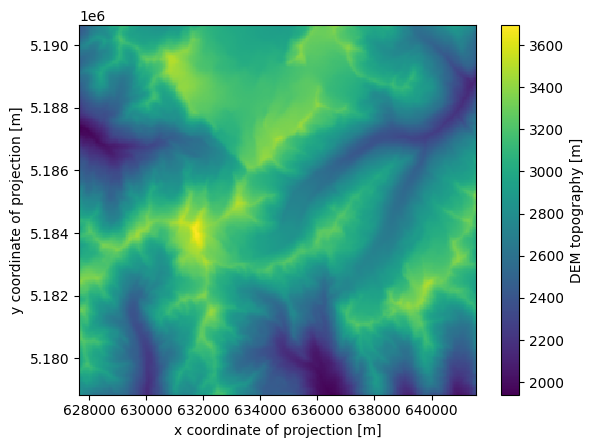
topo_ext = topo.where(mask==1)
topo_ext.plot();
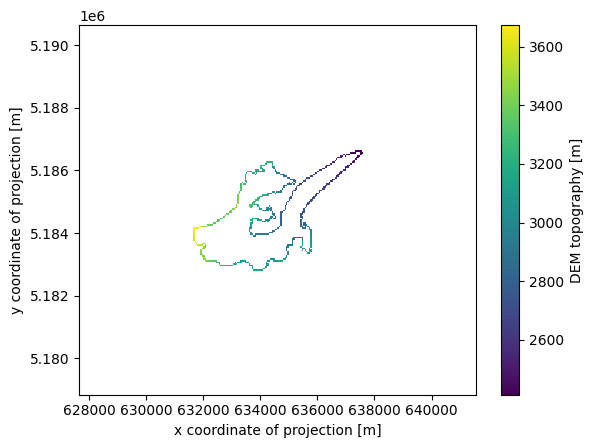
# Get the terminus
terminus = topo_ext.where(topo_ext==topo_ext.min(), drop=True)
# Project its coordinates from the local UTM to WGS-84
t_lon, t_lat = salem.transform_proj(gdir.grid.proj, 'EPSG:4326', terminus.x[0], terminus.y[0])
print('lon, lat:', t_lon, t_lat)
print('google link:', f'https://www.google.com/maps/place/{t_lat},{t_lon}')
lon, lat: 10.802210701456234 46.818888382223264
google link: https://www.google.com/maps/place/46.818888382223264,10.802210701456234
Terminus as the lowest point on the main centerline#
# Get the centerlines
cls = gdir.read_pickle('centerlines')
# Get the coord of the last point of the main centerline
cl = cls[-1]
i, j = cl.line.coords[-1]
# These coords are in glacier grid coordinates. Let's convert them to lon, lat:
t_lon, t_lat = gdir.grid.ij_to_crs(i, j, crs='EPSG:4326')
print('lon, lat:', t_lon, t_lat)
print('google link:', f'https://www.google.com/maps/place/{t_lat},{t_lon}')
lon, lat: 10.802210701031717 46.81888838235661
google link: https://www.google.com/maps/place/46.81888838235661,10.802210701031717
Terminus as the lowest point on the main flowline#
“centerline” in the OGGM jargon is not the same as “flowline”. Flowlines have a fixed dx and their terminus is not necessarily exact on the glacier outline. Code-wise it’s very similar though:
# Get the flowlines
cls = gdir.read_pickle('inversion_flowlines')
# Get the coord of the last point of the main centerline
cl = cls[-1]
i, j = cl.line.coords[-1]
# These coords are in glacier grid coordinates. Let's convert them to lon, lat:
t_lon, t_lat = gdir.grid.ij_to_crs(i, j, crs='EPSG:4326')
print('lon, lat:', t_lon, t_lat)
print('google link:', f'https://www.google.com/maps/place/{t_lat},{t_lon}')
lon, lat: 10.802046145127523 46.818340612432934
google link: https://www.google.com/maps/place/46.818340612432934,10.802046145127523
Bonus: convert the centerlines to a shapefile#
output_dir = utils.mkdir('outputs')
utils.write_centerlines_to_shape(gdirs, path=f'{output_dir}/centerlines.shp')
2026-03-09 23:39:42: oggm.utils: Applying global task write_centerlines_to_shape on 1 glaciers
2026-03-09 23:39:42: oggm.utils: write_centerlines_to_shape on outputs/centerlines.shp ...
2026-03-09 23:39:42: oggm.workflow: Execute entity tasks [get_centerline_lonlat] on 1 glaciers
sh = gpd.read_file(f'{output_dir}/centerlines.shp')
sh.plot();
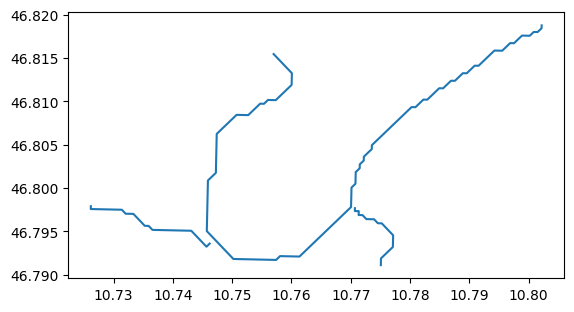
Remember: the “centerlines” are not the same things as “flowlines” in OGGM. The later objects undergo further quality checks, such as the impossibility for ice to “climb”, i.e. have negative slopes. The flowlines are therefore sometimes shorter than the centerlines:
utils.write_centerlines_to_shape(gdirs, path=f'{output_dir}/flowlines.shp', flowlines_output=True)
sh = gpd.read_file(f'{output_dir}/flowlines.shp')
sh.plot();
2026-03-09 23:39:42: oggm.utils: Applying global task write_centerlines_to_shape on 1 glaciers
2026-03-09 23:39:42: oggm.utils: write_centerlines_to_shape on outputs/flowlines.shp ...
2026-03-09 23:39:42: oggm.workflow: Execute entity tasks [get_centerline_lonlat] on 1 glaciers
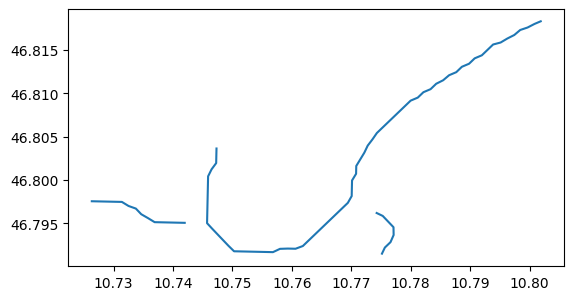
Flowline geometry after a run: with the new flowline diagnostics (new in v1.6.0!!)#
Starting from OGGM version 1.6.0, the choice can be made to store the OGGM flowline diagnostics. This can
be done, either by using the store_fl_diagnostics=True keyword argument to the respective simulation task
or by setting cfg.PARAMS['store_fl_diagnostics']=True as a global parameter (Note: the store_fl_diagnostic_variables
parameter allows you to control what variables are saved). Here we use the keyword argument:
# as we work with Centerlines, we need to set the evolution_model to 'FluxBase'
cfg.PARAMS['evolution_model'] = 'FluxBased'
tasks.init_present_time_glacier(gdir)
tasks.run_constant_climate(gdir, nyears=100, y0=2000, store_fl_diagnostics=True);
2026-03-09 23:39:42: oggm.cfg: PARAMS['evolution_model'] changed from `SemiImplicit` to `FluxBased`.
We will now open the flowline diagnostics you just stored during the run. Each flowline is stored as one group in the main dataset, and there are as many groups as flowlines. “Elevation band flowlines” always results in one flowline (fl_0), but there might be more depending on the glacier and/or settings you used.
Here we have more than one flowline, we pick the last one:
f = gdir.get_filepath('fl_diagnostics')
with xr.open_dataset(f) as ds:
# We use the "base" grouped dataset to learn about the flowlines
fl_ids = ds.flowlines.data
# We pick the last flowline (the main one)
with xr.open_dataset(f, group=f'fl_{fl_ids[-1]}') as ds:
# The data is compressed - it's a good idea to store it to memory
# before playing with it
ds = ds.load()
ds
<xarray.Dataset> Size: 874kB
Dimensions: (dis_along_flowline: 119, time: 101)
Coordinates:
* dis_along_flowline (dis_along_flowline) float64 952B 0.0 100.0 ... 1.18e+04
* time (time) float64 808B 0.0 1.0 2.0 3.0 ... 98.0 99.0 100.0
calendar_year (time) int64 808B 0 1 2 3 4 5 6 ... 95 96 97 98 99 100
calendar_month (time) int64 808B 1 1 1 1 1 1 1 1 1 ... 1 1 1 1 1 1 1 1
hydro_year (time) int64 808B 0 1 2 3 4 5 6 ... 95 96 97 98 99 100
hydro_month (time) int64 808B 4 4 4 4 4 4 4 4 4 ... 4 4 4 4 4 4 4 4
Data variables: (12/13)
point_lons (dis_along_flowline) float64 952B 10.75 10.75 ... 10.86
point_lats (dis_along_flowline) float64 952B 46.8 46.8 ... 46.84
bed_h (dis_along_flowline) float64 952B 3.379e+03 ... 2.153...
volume_m3 (time, dis_along_flowline) float64 96kB 3.447e+06 ......
volume_bsl_m3 (time, dis_along_flowline) float64 96kB 0.0 0.0 ... 0.0
volume_bwl_m3 (time, dis_along_flowline) float64 96kB 0.0 0.0 ... 0.0
... ...
thickness_m (time, dis_along_flowline) float64 96kB 39.27 ... 0.0
ice_velocity_myr (time, dis_along_flowline) float64 96kB nan nan ... 0.0
calving_bucket_m3 (time) float64 808B 0.0 0.0 0.0 0.0 ... 0.0 0.0 0.0 0.0
flux_divergence (time, dis_along_flowline) float64 96kB nan nan ... 0.0
climatic_mb (time, dis_along_flowline) float64 96kB nan nan ... 0.0
dhdt (time, dis_along_flowline) float64 96kB nan nan ... 0.0
Attributes:
calendar: 365-day no leap
water_level: 0
dx: 2.0
creation_date: 2026-03-09 23:39:42
fs: 0
mb_model_class: MultipleFlowlineMassBalance
map_dx: 50.0
class: MixedBedFlowline
glen_a: 1.1496588065219904e-23
oggm_version: 1.6.3.dev47+g61a0dd492
mb_model_hemisphere: nh
description: OGGM model outputThe graphic routines in OGGM can’t (yet) be used to plot the flowline diagnostics, but here are some plots made with xarray alone.
The following plot shows the volume timeseries of the simulation for this one flowline, not the entire glacier!:
ds.volume_m3.sum(dim='dis_along_flowline').plot();
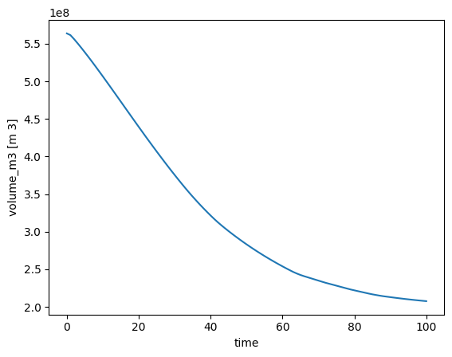
The glacier surface height is needed for the next plot. This can be computed by adding up the heigth of the glacier bed and the glacier thickness.
surface_m = ds.bed_h + ds.thickness_m
Here we will plot the glacier at the start and the end of the simulation, but feel free to use other years that have been simulated.
# Here the glacier in the first and last year of the run are plotted in transparent blue.
plt.fill_between(ds.dis_along_flowline, surface_m.sel(time=0), ds.bed_h, color='C0', alpha=0.30)
plt.fill_between(ds.dis_along_flowline, surface_m.sel(time=50), ds.bed_h, color='C1', alpha=0.30)
# Here we plot the glacier surface in both years and the glacier bed.
surface_m.sel(time=0).plot(label='Initial glacier surface', color='C0')
surface_m.sel(time=50).plot(label='Glacier surface at year 50', color='C1')
ds.bed_h.plot(label='glacier bed', color='k')
plt.legend(); plt.ylabel('Elevation [m]');
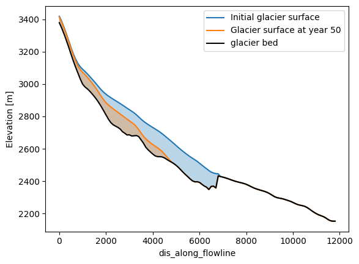
The flowline diagnostics also store velocities along the flowline:
# Note that velocity at the first step of the simulation is NaN
ds.ice_velocity_myr.sel(time=[1, 10, 20, 100]).plot(hue='time');
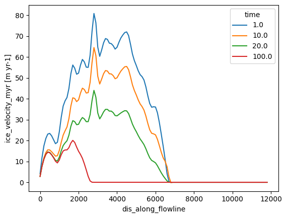
New in OGGM v1.6.1: also the climatic mass-balance (\(\dot{m}\)), dh/dt (similar to \(\frac{\partial S}{\partial t}\) but for thickness instead of section-area) and the flux divergence (\(\nabla \cdot q\)) along the flowline are stored (see Documentation):
ds.climatic_mb.sel(time=[1, 10, 20, 100]).plot(hue='time');
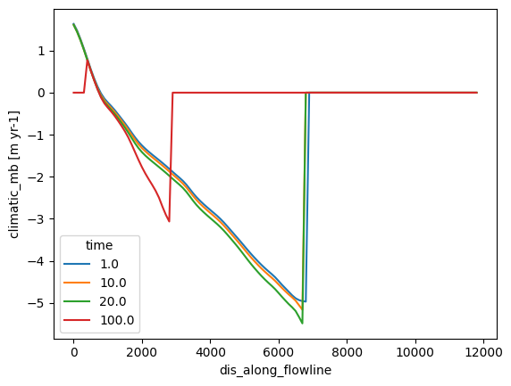
ds.dhdt.sel(time=[1, 10, 20, 100]).plot(hue='time');
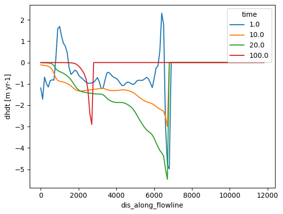
ds.flux_divergence.sel(time=[1, 10, 20, 100]).plot(hue='time');
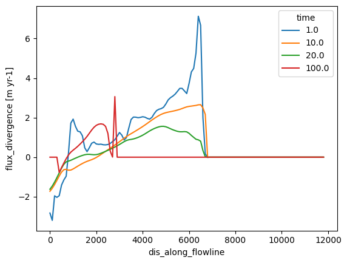
Note that we can see numeric instabilities in the flux divergence at year 20. The reason for this is that we used here the less stable dynamic numeric solver ‘Flux-Based’. For more information on this problem check out 10 minutes to… understand difference between ice dynamic models!
Location of the terminus over time#
Let’s find the indices where the terminus is (i.e. the last point where ice is thicker than 1m), and link these to the lon, lat positions along the flowlines. First, lets get the data we need into pandas dataframes:
# Convert the xarray data to pandas
df_coords = ds[['point_lons', 'point_lats']].to_dataframe()
df_thick = ds.thickness_m.to_pandas().T
df_thick[[0, 50, 100]].plot(title='Main flowline thickness')
plt.ylabel('glacier thickness (m)');
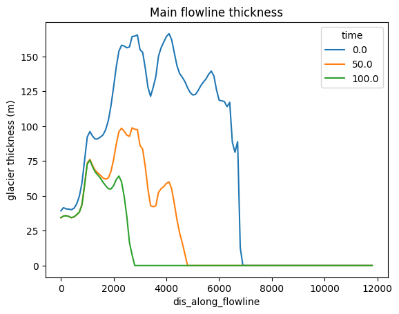
The first method to locate the terminus uses fancy pandas functions but may be more cryptic for less experienced pandas users:
# Nice trick from https://stackoverflow.com/questions/34384349/find-index-of-last-true-value-in-pandas-series-or-dataframe
dis_term = (df_thick > 1)[::-1].idxmax()
# Select the terminus coordinates at these locations
loc_over_time = df_coords.loc[dis_term].set_index(dis_term.index)
# this makes the cbar nicer
loc_over_time['Year'] = loc_over_time.index.astype(int)
# Plot them over time
fig = loc_over_time.plot.scatter(x='point_lons', y='point_lats', c='Year',
colormap='viridis')
plt.title('Location of the terminus over time');
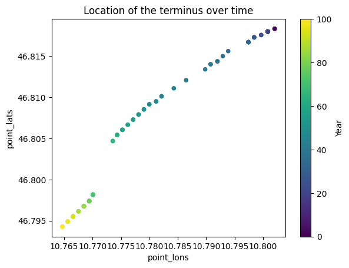
# Plot them on a Google Maps image - you need an API key for this
# api_key = ''
# from motionless import DecoratedMap, LatLonMarker
# dmap = DecoratedMap(maptype='satellite', key=api_key)
# for y in [0, 20, 40, 60, 80, 100]:
# tmp = loc_over_time.loc[y]
# dmap.add_marker(LatLonMarker(tmp.lat, tmp.lon, ))
# print(dmap.generate_url())
And now, method 2: less fancy but maybe easier to read?
for yr in [0, 20, 40, 60, 80, 100]:
# Find the last index of the terminus
p_term = np.nonzero(df_thick[yr].values > 1)[0][-1]
# Print the location of the terminus
print(f'Terminus pos at year {yr}', df_coords.iloc[p_term][['point_lons', 'point_lats']].values)
Terminus pos at year 0 [10.80204615 46.81834061]
Terminus pos at year 20 [10.80084062 46.81799003]
Terminus pos at year 40 [10.79077057 46.81402539]
Terminus pos at year 60 [10.77525244 46.80604375]
Terminus pos at year 80 [10.76847342 46.7967535 ]
Terminus pos at year 100 [10.76468565 46.79426658]
Flowline geometry after a run: with FileModel#
This method uses another way to output the model geometry (model_geometry files), which are less demanding in disk space but require more computations to restore the full geometry after a run (OGGM will help you to do that). This method is to be preferred to the above if you want to save disk space or if you don’t have yet access to flowline diagnostics files.
Let’s do a run first:
cfg.PARAMS['store_model_geometry'] = True # We want to get back to it later
tasks.init_present_time_glacier(gdir)
tasks.run_constant_climate(gdir, nyears=100, y0=2000);
2026-03-09 23:39:45: oggm.cfg: PARAMS['store_model_geometry'] changed from `False` to `True`.
We use a FileModel to read the model output:
fmod = flowline.FileModel(gdir.get_filepath('model_geometry'))
A FileModel behaves like a OGGM’s FlowlineModel:
fmod.run_until(0) # Point the file model to year 0 in the output
graphics.plot_modeloutput_map(gdir, model=fmod) # plot it
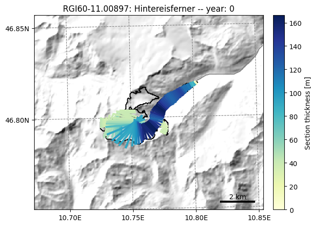
fmod.run_until(100) # Point the file model to year 100 in the output
graphics.plot_modeloutput_map(gdir, model=fmod) # plot it
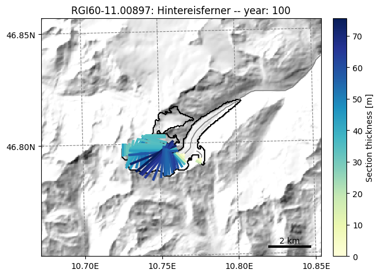
# Bonus - get back to e.g. the volume timeseries
fmod.volume_km3_ts().plot();
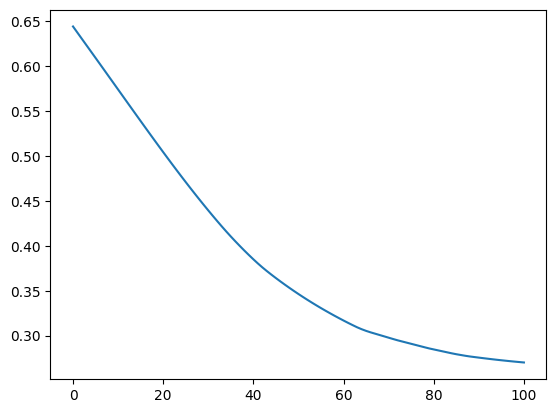
OK, now create a table of the main flowline’s grid points location and bed altitude (this does not change with time):
fl = fmod.fls[-1] # Main flowline
i, j = fl.line.xy # xy flowline on grid
lons, lats = gdir.grid.ij_to_crs(i, j, crs='EPSG:4326') # to WGS84
df_coords = pd.DataFrame(index=fl.dis_on_line*gdir.grid.dx)
df_coords.index.name = 'Distance along flowline'
df_coords['lon'] = lons
df_coords['lat'] = lats
df_coords['bed_elevation'] = fl.bed_h
df_coords.plot(x='lon', y='lat', legend=False)
plt.ylabel('lat');
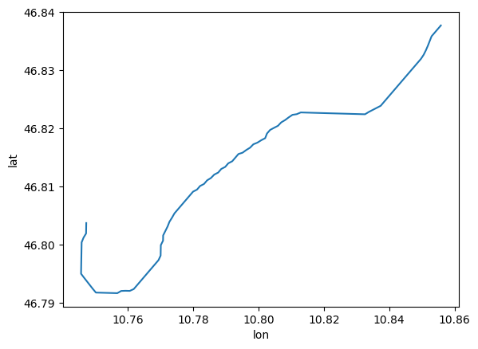
df_coords['bed_elevation'].plot();
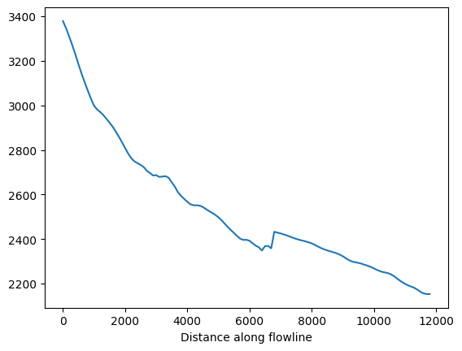
Now store a time varying array of ice thickness, surface elevation along this line:
years = np.arange(0, 101)
df_thick = pd.DataFrame(index=df_coords.index, columns=years, dtype=np.float64)
df_surf_h = pd.DataFrame(index=df_coords.index, columns=years, dtype=np.float64)
df_bed_h = pd.DataFrame()
for year in years:
fmod.run_until(year)
fl = fmod.fls[-1]
df_thick[year] = fl.thick
df_surf_h[year] = fl.surface_h
df_thick[[0, 50, 100]].plot()
plt.title('Ice thickness at three points in time')
plt.ylabel('Glacier thickness (m)')
plt.legend(title='Year');
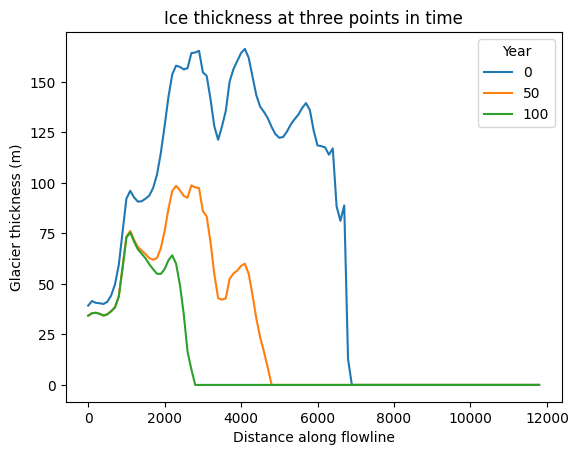
f, ax = plt.subplots()
df_surf_h[[0, 50, 100]].plot(ax=ax)
df_coords['bed_elevation'].plot(ax=ax, color='k')
plt.title('Glacier elevation at three points in time')
plt.legend(title='Year');
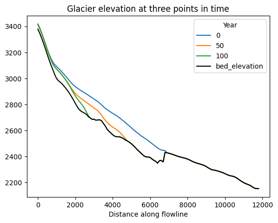
Location of the terminus over time#
Let’s find the indices where the terminus is (i.e. the last point where ice is thicker than 1m), and link these to the lon, lat positions along the flowlines.
The first method uses fancy pandas functions but may be more cryptic for less experienced pandas users:
# Nice trick from https://stackoverflow.com/questions/34384349/find-index-of-last-true-value-in-pandas-series-or-dataframe
dis_term = (df_thick > 1)[::-1].idxmax()
# Select the terminus coordinates at these locations
loc_over_time = df_coords.loc[dis_term].set_index(dis_term.index)
loc_over_time['Year'] = loc_over_time.index.astype(int)
# Plot them over time
loc_over_time.plot.scatter(x='lon', y='lat', c='Year', colormap='viridis');
plt.title('Location of the terminus over time');
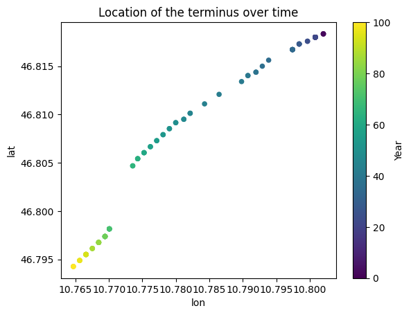
And now, method 2: less fancy but maybe easier to read?
for yr in [0, 20, 40, 60, 80, 100]:
# Find the last index of the terminus
p_term = np.nonzero(df_thick[yr].values > 1)[0][-1]
# Print the location of the terminus
print(f'Terminus pos at year {yr}', df_coords.iloc[p_term][['lon', 'lat']].values)
Terminus pos at year 0 [10.80204615 46.81834061]
Terminus pos at year 20 [10.80084062 46.81799003]
Terminus pos at year 40 [10.79077057 46.81402539]
Terminus pos at year 60 [10.77525244 46.80604375]
Terminus pos at year 80 [10.76847342 46.7967535 ]
Terminus pos at year 100 [10.76468565 46.79426658]
What’s next?#
return to the OGGM documentation
back to the table of contents
Comments on “elevation band flowlines”#
If you use elevation band flowlines, the location of the flowlines is not known: indeed, the glacier is an even more simplified representation of the real world one. In this case, if you are interested in tracking the terminus position, you may need to use tricks, such as using the retreat from the terminus with time, or similar.